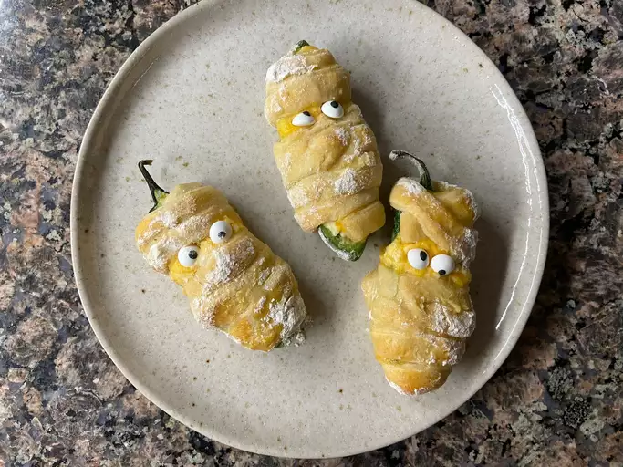

Baked Mummy Jalepeno Poppers
A frightful twist on a classic bar snack

Ingredients
- 5 Ounces Cream Cheese
- 3 Ounces shredded Cheddar Cheese
- Salt and pepper to taste
- 6 large fresh jalepeno peppers
- 1 can of crescent rolls
- 1 egg
- 1 tbsp milk
- 1/4 cup all-purpose flour
- 24 candy eyeballs
Directions
- Gather all ingredients. Preheat oven to 350 degrees F (175 degrees C). Line a baking sheet with parchment paper.
- Combine cream cheese and Cheddar cheese in a bowl and season filling with salt and pepper. Spoon filling into jalapeno halves.
- Roll out crescent dough on a lightly floured surface and cut into thin strips using a pizza cutter or a small knife. Wrap stuffed jalapenos with dough strips, leaving a small space unwrapped where the eyes will go.
- Combine egg and milk in a bowl. Add flour to another bowl and season with salt and pepper. Dip stuffed jalapenos first in the egg mixture, then roll in the flour. Place on the prepared baking sheet.
- Bake in the preheated oven until dough is lightly browned, 15 to 20 minutes.
- Remove from baking sheet and stick candy eyeballs in melted cheese.